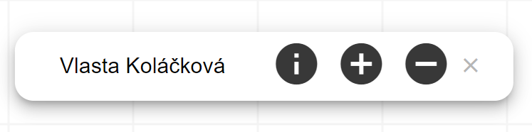

Klikněte na vybranou osobu v rodokmenu se kterou chcete provádět příslušné operace:
Zobrazit více informací o osobě
Přidat k ní příbuznou osobu
Odstranit osobu z rodokmenu
Krok 2
Ve spodní části obrazovky se vám zobrazí navigační panel:

Ikony mají následující funkce:
info Zobrazí podrobné informace o osobě v levé části
prohlížeče (funguje i kliknutí na jméno). Osobu lze dále upravovat, zobrazit podrobnosti o svatbách
nebo si prohlédnout matriční záznamy osoby.
add_circle Spuštění procesu přidávání nové osoby do
rodokmenu.
remove_circle Odebrání vybrané osoby ze stávajícího
rodokmenu.